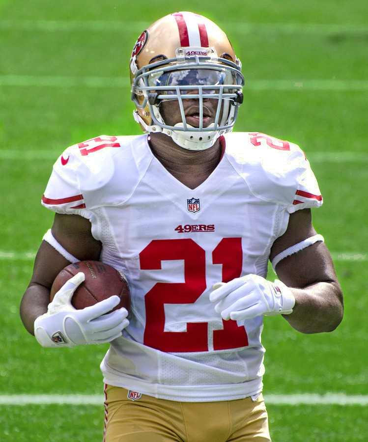
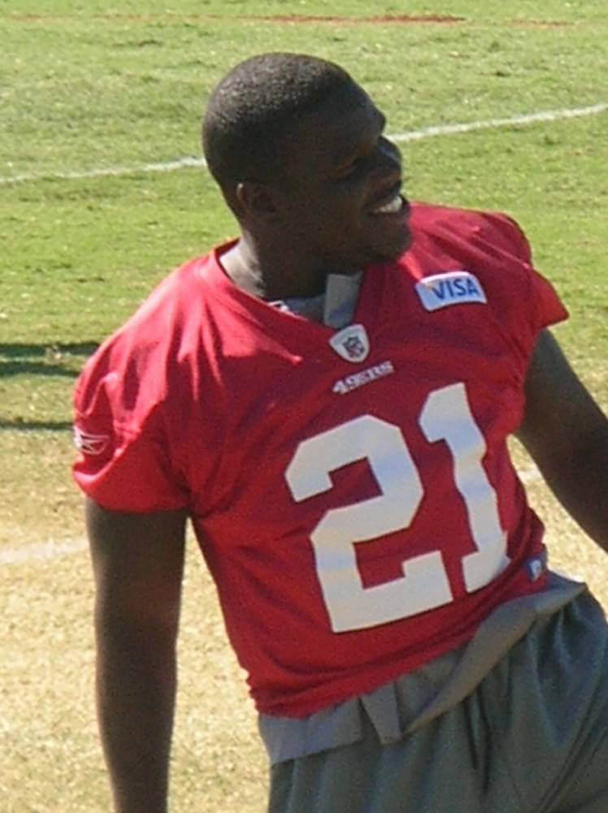
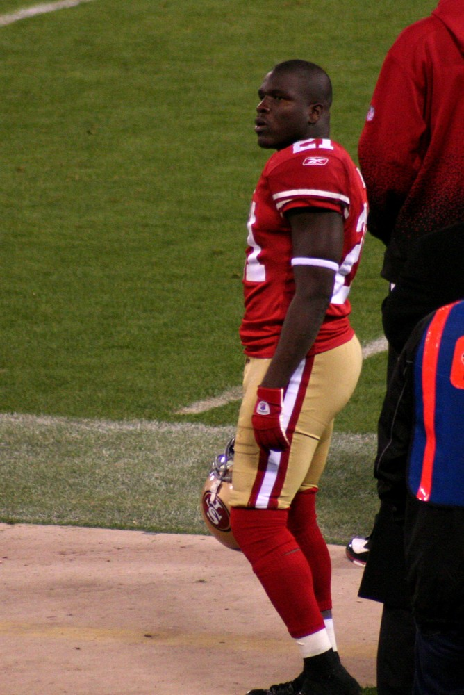
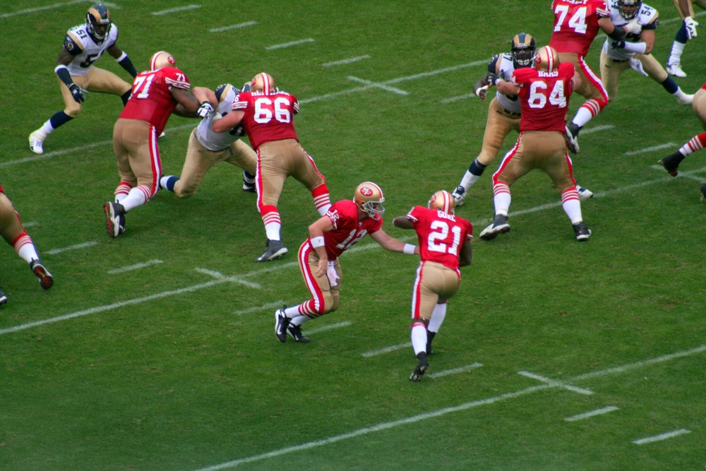

Frank Gore
Two torn ACLs in college, a third round pick, and then ten years of carrying our offense on his back. Nobody has ever run for more yards as a 49er.
The Frank Gore Story
Some guys run for yards. Frank Gore ran for ten years, through a bad decade and into a good one, and when he was done nobody in 49ers history had run for more. Not Joe Perry, not Roger Craig, nobody.
He grew up in Coconut Grove in Miami, in a one bedroom apartment with twelve people as a kid, he said later. At Coral Gables High he ran for 2,997 yards and 39 touchdowns as a senior, and he picked the University of Miami so he could stay close to his mother, who was on dialysis for kidney disease.
He was special right away. As a true freshman on Miami's 2001 national title team he averaged 9.1 yards a carry as Clinton Portis's backup. Then he tore the ACL in his left knee in the spring of 2002, came back in 2003, and tore his ACL again that October. A lot of people figured he was done before he ever got started.
The 49ers took him in the third round of the 2005 draft, 65th overall. As a rookie he led the team with 608 yards, the most by a 49ers rookie since Roger Craig in 1983. Then he had surgery on both shoulders.
In 2006 the 49ers traded Kevan Barlow and gave Gore the job, and he went off. 1,695 yards, a franchise record, 5.4 a carry, and 2,180 yards from scrimmage, another franchise record. He ran for 212 against Seattle, the most ever in a single game by a 49er. He led the NFC in rushing and made his first Pro Bowl. Somewhere in there he got the nickname The Inconvenient Truth.
In September 2007 his mother died. He missed one practice, flew back, and scored twice that Sunday in a 17 to 16 win at St. Louis.
The teams around him weren't good for a while, but he kept going. In 2008 he became the first 49ers back to run for 1,000 yards three seasons straight. In 2009 he ran for 206 yards against Seattle, with touchdown runs of 79 and 80 yards in the same game. Only Barry Sanders had done that before him.
Then Jim Harbaugh showed up in 2011 and the whole thing turned. The 49ers went 13 and 3, Gore ran for 1,211 yards and five straight 100 yard games, and late that season he passed Joe Perry to become the franchise's all time leading rusher.
In 2012 he ran for 1,214 yards, then 119 against Green Bay in the playoffs, 90 and two touchdowns in the NFC Championship win in Atlanta, and 110 with a touchdown in Super Bowl XLVII, a 34 to 31 loss to Baltimore that still hurts. He made the Pro Bowl that year and the next.
His last game as a 49er was a 20 to 17 win over Arizona, and he ran for 144 yards in it. He finished with 11,073 rushing yards in red and gold, then kept going for six more years with the Colts, Dolphins, Bills and Jets.
When he finally stopped after 2020 he had exactly 16,000 rushing yards, third most in NFL history, and 241 games, the most ever by a running back. On June 2, 2022, he signed a one day contract so he could retire a 49er. The team put him in its Hall of Fame, and in 2023 hired him as a football advisor.
What He Meant to Us
Frank Gore was the reason I kept watching some of those Sundays in the late 2000s. The team was going nowhere, and every week he'd still run like it was a playoff game.
Two torn ACLs before he ever got to the league. Surgery on both shoulders after his rookie year. His mom dies a week into the 2007 season and he scores twice that Sunday. You can't write a tougher guy than that.
And then he got his reward. Harbaugh came in, the defense got nasty, and Gore was the engine for three straight NFC title games. That run in Atlanta, the 90 yards and two scores that put us in the Super Bowl, is the Frank Gore I see when I close my eyes.
He played for four other teams after us, and none of that bothers me. He always said he'd retire a 49er, and he did. Eleven thousand seventy three yards. That record's going to sit there a long time.
In Pictures



Why He Was Clutch
Gore's best stretch came exactly when the 49ers finally had something to play for. In his first playoff run after the 2011 season, he gained 89 total yards in the 36 to 32 win over the Saints at Candlestick.
The next year he was even better. 119 yards and a touchdown against Green Bay in the divisional round, then 90 yards and two touchdowns in Atlanta to win the NFC, then 110 yards and a score in the Super Bowl. That's 319 rushing yards and four touchdowns in three playoff games.
And he'd bail you out in the regular season too. Down 23 to 3 at halftime in Philadelphia in 2011, he ran for 127 yards and scored the go ahead touchdown with four minutes left. In 2013 his 51 yard run with four minutes to go helped hold off Seattle 19 to 17.
Clutch Moments
- November 19, 2006
212 yards against Seattle
Gore carried 24 times for 212 yards in a 20 to 14 win over the Seahawks at Candlestick, breaking the 49ers single game rushing record. He finished that season with 1,695 yards, another franchise record.
- September 20, 2009
Two 75 plus yard touchdowns in one game
In the home opener against Seattle, Gore ran for 206 yards, 12.8 a carry, with touchdown runs of 79 and 80 yards in a 23 to 10 win. Barry Sanders was the only other player in NFL history to score twice on runs that long in one game.
- October 2, 2011
The comeback in Philadelphia
The 49ers trailed the Eagles 23 to 3 at halftime. Gore ran for 127 yards on 15 carries and scored the winning touchdown with about four minutes left in a 24 to 23 win that told everybody the Harbaugh 49ers were for real.
- 2011 season
Passing Joe Perry
In a win over the Rams late in the 2011 season, Gore passed Joe Perry's mark of 8,689 yards to become the 49ers all time leading rusher. He finished his 49ers career with 11,073.
- January 14, 2012
His first playoff game
In the divisional round against the Saints at Candlestick, Gore had 89 total yards, including runs that set up a touchdown, as the 49ers won a wild one 36 to 32.
- January 20, 2013
Winning the NFC in Atlanta
At the Georgia Dome, the 49ers beat the top seeded Falcons 28 to 24. Gore ran for 90 yards and two touchdowns to send San Francisco to its first Super Bowl since the 1994 season.
- February 3, 2013
Super Bowl XLVII
Gore ran 19 times for 110 yards and a touchdown in New Orleans. The 49ers fell behind 28 to 6, fought back, and couldn't finish it, losing 34 to 31 to Baltimore.
- June 2, 2022
Retiring a 49er
After 16 seasons and 16,000 rushing yards, Gore signed a one day contract with the 49ers so he could retire with the team that drafted him.
The Highlights
What They Said About Gore
“I knew early on that I wouldn't let my college career define me in regard to injuries and that I would have to outwork a lot of people to get to where I wanted to be.”
“This organization will always be a part of me, one that I will forever associate myself with,”
“I will talk about San Francisco as 'we' and 'us' for the rest of my life and will support the 49ers and The Faithful in every way possible.”
“Frank had to overcome many challenges upon entering the NFL and now leaves the game not only as one of the best backs in NFL history, but one of the best football players ever,”
Career Stats
| Year | Team | G | GS | Att | Yds | Avg | Lng | TD | Rec | RecYds | RecTD |
|---|---|---|---|---|---|---|---|---|---|---|---|
| 2005 | SF | 14 | 1 | 127 | 608 | 4.8 | 72T | 3 | 15 | 131 | 0 |
| 2006 | SF | 16 | 16 | 312 | 1695 | 5.4 | 72 | 8 | 61 | 485 | 1 |
| 2007 | SF | 15 | 15 | 260 | 1102 | 4.2 | 43T | 5 | 53 | 436 | 1 |
| 2008 | SF | 14 | 14 | 240 | 1036 | 4.3 | 41T | 6 | 43 | 373 | 2 |
| 2009 | SF | 14 | 14 | 229 | 1120 | 4.9 | 80T | 10 | 52 | 406 | 3 |
| 2010 | SF | 11 | 11 | 203 | 853 | 4.2 | 64 | 3 | 46 | 452 | 2 |
| 2011 | SF | 16 | 15 | 282 | 1211 | 4.3 | 55 | 8 | 17 | 114 | 0 |
| 2012 | SF | 16 | 16 | 258 | 1214 | 4.7 | 37 | 8 | 28 | 234 | 1 |
| 2013 | SF | 16 | 16 | 276 | 1128 | 4.1 | 51 | 9 | 16 | 141 | 0 |
| 2014 | SF | 16 | 16 | 255 | 1106 | 4.3 | 52T | 4 | 11 | 111 | 1 |
| 2015 | IND | 16 | 16 | 260 | 967 | 3.7 | 37T | 6 | 34 | 267 | 1 |
| 2016 | IND | 16 | 16 | 263 | 1025 | 3.9 | 22 | 4 | 38 | 277 | 4 |
| 2017 | IND | 16 | 16 | 261 | 961 | 3.7 | 21 | 3 | 29 | 245 | 1 |
| 2018 | MIA | 14 | 14 | 156 | 722 | 4.6 | 39 | 0 | 12 | 124 | 1 |
| 2019 | BUF | 16 | 8 | 166 | 599 | 3.6 | 41 | 2 | 13 | 100 | 0 |
| 2020 | NYJ | 15 | 14 | 187 | 653 | 3.5 | 17 | 2 | 16 | 89 | 0 |
| Career | 241 | 218 | 3735 | 16000 | 4.3 | 80T | 81 | 484 | 3985 | 18 |
49ers totals: 11,073 rushing yards, a franchise record. 2,180 scrimmage yards in 2006 is also a 49ers record. Scroll the table sideways on a phone.
Postseason
| Year | Team | G | GS | Att | Yds | Avg | Lng | TD | Rec | RecYds | RecTD |
|---|---|---|---|---|---|---|---|---|---|---|---|
| 2011 | SF | 2 | 2 | 29 | 163 | 5.6 | 42 | 0 | 13 | 83 | 0 |
| 2012 | SF | 3 | 3 | 63 | 319 | 5.1 | 33 | 4 | 2 | 48 | 0 |
| 2013 | SF | 3 | 3 | 48 | 164 | 3.4 | 39 | 3 | 3 | 36 | 0 |
| 2019 | BUF | 1 | 1 | 8 | 22 | 2.8 | 14 | 0 | 0 | 0 | 0 |
| Career | 9 | 9 | 148 | 668 | 4.5 | 42 | 7 | 18 | 167 | 0 |